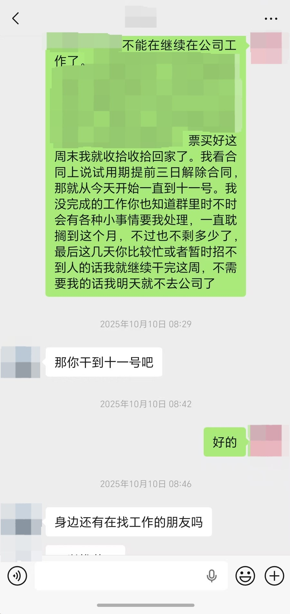

辞职实习到秋招：我怎么熬过那半年
现在我已经入职将近一年了。起码当前的我有了在一线城市独居的能力，每月也能攒点小钱，开始慢慢关注起规律生活而不是像上大学或实习一样活得很不健康，很不规律，我认为这一切都在向上的感觉是很对的，虽然向上的速度很慢，很慢。
其实这篇文章国庆时就想写了，一直拖到了十月底才开始。为什么是国庆时想写呢？它让我想到我去年（2025）国庆，算是我个人求职的一个转折点。
先交代下背景吧，我的专业是软工，于大三下学期，也就是 25 年 7 月份才开始的实习，在此之前我只是个双非、无竞赛经历、无实习经历的迷茫大学生。大三之前在做什么？犯懒打游戏（王者单排纯辅助上过荣耀，巅峰纯辅助上过 2100，有四五个辅助万战？没啥天赋），顺便学点传统开发需要的技术栈，学的很浅。暑假前的五六月份狠狠补了点技术栈及八股，6 月底出发去 A 市的一家小厂实习了 2 个月，期间下班后还是会继续补技术栈及八股。实习结束后我本想着直接在 A 市 all in 秋招（我大学所在城市很少有互联网公司来招人），结果正好撞上开学返校，学校的要求是必须有实习证明且实习薪资不低于 3k 才可以不返校，否则必须回学校统一集训好几个月（我当时觉得这等于把宝全押在春招上，是自取灭亡），于是我不得已又找了个小厂继续实习。我们学校当时说的查实习还是比较严的，什么定位打卡，工资流水什么的，事后发现其实没那么严，标准是有弹性的，但是当时的我还只是个眼神清澈的大学生，老老实实又当了一个月牛马。中间也在招聘软件和官网上投过简历，但实习占着时间，投得不多，约线下面试还得调休，整体而言确实积累了一些面试经验，但是没有拿到满意的 offer。
金九银十，虽然九月对于我这个双非来说确实意义不大，但是眼睁睁看着大佬们一早就在九月份开始收割 offer，自己却一直没什么实质性进展，心里还是很焦虑的。思来想去还是在国庆后提了离职，在这之后才算是正式全身心投入到秋招的战场中。

鉴于实习期间的线上投递收获很有限，我将重心放在了线下的校招双选会/招宣会上。首先，A 市的 985/211（我们私下简称「92」）数量是非常可观的，即使是到了 11 月上中旬这样的秋招末期，同一时段内不同大学同时有双选会的情况也是存在的；其次，线下投递的简历在大部分公司的面试流程中都会更快收到面试邀请，A 市本地的公司线下面试更是快的飞起，一下午笔试+三面全流程走完都是很常见的。
虽然留在 A 市的理由很充分，我刚开始投简历也是非常难受的。本身实习期间的线上面试就没什么收获，再加上学历、面试经验不足、技术栈不够深不够广等等因素，我一度没什么自信了，想着要不然干脆回去沉淀沉淀，做/魔改一个像样的项目出来、多啃啃八股，做好万全准备之后再去赌春招。后面仔细想了想，还是觉得就这样灰头土脸回家太窝囊了，本身家里就很反对我走就业，回去大概率天天催着考研，实习也没攒下什么钱，不够我在别的地方租房撑到春招开始。于是我坚持认真对待每一场双选会，每一场笔试/面试。
之后便是一段枯燥、规律且充实的时光。每周末参加完笔试/面试后，我会先复盘本周的面试录音，总结自己哪方面答得不好；复盘完毕后会继续刷八股，针对面试薄弱的地方针对性记忆；最后周日下午会收集下周 A 市各大学的双选会，根据学校层次和我感兴趣岗位多少的程度安排下周行程，顺便把下周约好的面试也放进去，整体优先级为：笔试/面试 > 92 双选会 > 普本双选会。周内最常见的情况就是，早上六七点起床出发去 A 市各大学奔波，一直到晚上八九点背着一摞招宣传单回到自己的出租屋。
其实跑线下也不只是排队递简历。比如我参加双选会期间结识了线下投简历的搭子，我们有时会几人一起抽出时间参加同一场双选会，会后一起品鉴各大学食堂的美食，讨论该大学的亲民程度、食堂价格、标识性特色等。当然还有中大厂宣讲会时喜闻乐见的礼品发放还有抽奖环节，我见过很多价值不等的礼品，小到 AI 转录 VIP 时长（感觉跟我一样经常参加线下投递的都能大概猜出来这是哪个公司）、带有企业标志的文具，大到 AI 鼠标、耳机、华为最新款手机等，虽然我收了一堆不咋值钱的东西吧，我还是收藏至今，偶尔翻出来还是很有感触。还有种非常特殊的双选会，校企深度合作开展的，会送出具有地方特色的非遗礼品，还有试吃、歌舞表演等环节，请了主持人，开了现场直播。这唯一的一场是我参加过的最热闹的一场双选会，它不像常规双选会那样为了效率，把企业棚子围成一圈、或者摆成方格，大部分求职的大学生/研究生们在棚子跟前排起长队，还有的站在立牌前观望有没有合适的岗位，顺便跟一起来的舍友吐槽当前的就业环境，大家匆匆而来，碌碌而走，散场时只剩空荡的棚子和飞舞的传单。
终于，在十月下旬时，我收到了第一个真正意义上的 offer（秒过通知给 3k 的不算）。拿到第一个 offer 后，我依然保持着之前的规划，区别是面试时会更加从容淡定了。一直到了 11 月中下旬，我收到的笔试面试已经占满了每天的行程，在面试-复盘的循环中，我拿到了满意的 offer。渐渐进入到秋招尾声后，我订好车票退掉了后续的线下面试，给秋招之旅画上了句号。
暂时先写到这里吧，姑且算是秋招篇。回头看其实秋招时收获了很多也错失了很多，不过我还是很感激当时那个坚持的我自己和与我共勉的朋友，不是你们我可能连这行都进不了，至于这是好事还是坏事，就交给以后的我评说吧。
在我入职前后，互联网迎来了拥有极强编程能力的 AI 大人。被 AI 掐断传统学徒路径的我，是怎么凭借 AI 在同期中脱颖而出，拿到转正资格的。公司人员流动频繁，我又怎么保持自己的竞争力。这些问题我会在下篇文章给出我的解答，至于什么时候写，还是随缘吧，就跟本篇一样。
好的这里是阿柠，我们有缘再见。
—— 阿柠 10.29